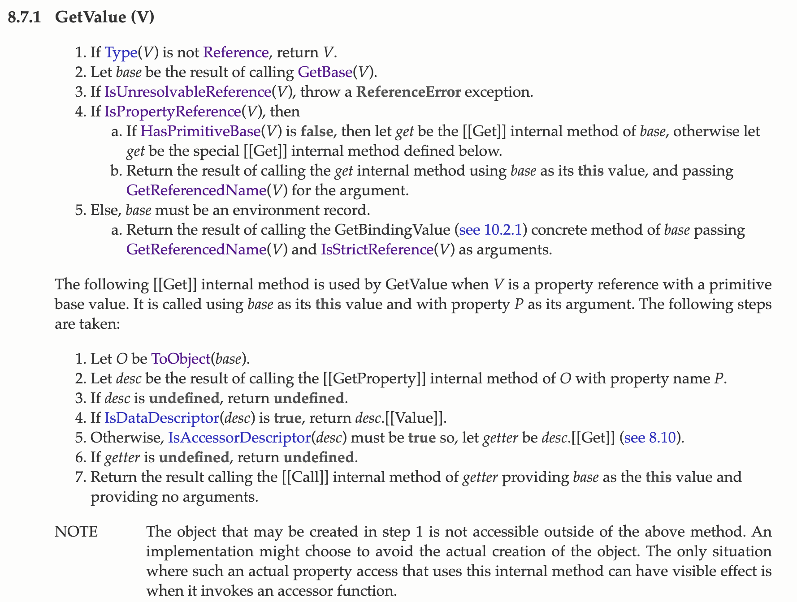
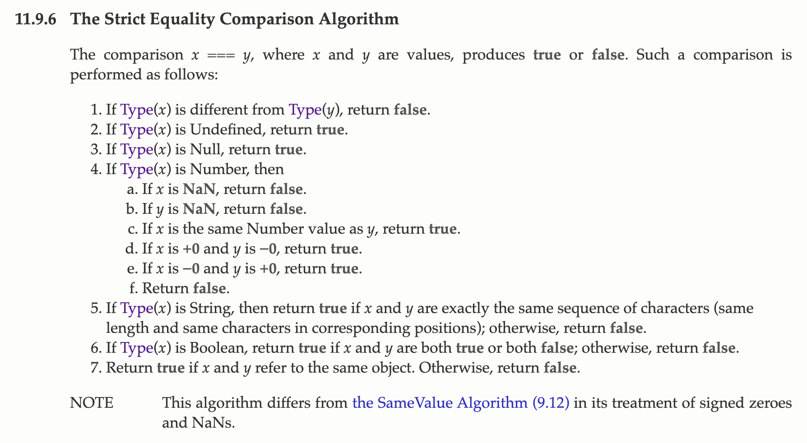

JavaScript 杂记：全等、indexOf 语义与 Membrane
专门写篇文章来记录最近一段时间遇到的几个小问题。本文主要介绍 JavaScript 中全等（“===”）运算符和 “Array.prototype.indexOf” 方法在 ECMA262 标准中的语义以及 JavaScript Membrane 的定义。其中 “JavaScript Membrane” 是 TC39 官方给出的对 ES6 中新增的 Proxy 特性正确使用场景的代码描述。
“===” 与 “Array.prototype.indexOf” 语义
对于 JavaScript 中的 Primitive Type（undefined, null, string, boolean, number）这里我们不做分析，主要看字面量对象（Object）这种类型，由于 Function 本身也是一种 Object（原型链最上层），所以我们也不单独对其进行讨论，首先给出一段代码。
const DEFAULT_INDEX = 0;
let x = [
{ name: 'Jason' },
{ name: 'Alice' }
];
let y = [
{ name: 'John' }
];
let z = [].concat(x, y);
console.log(z[DEFAULT_INDEX] === x[DEFAULT_INDEX]); // true;
console.log(z.filter(o => y.indexOf(o) === -1)); // (2) [{…}, {…}];可以看到，我们可以使用全等运算符（“===”）或者 “indexOf” 函数来判断两个对象指向的是不是同一个引用。在 ES6 标准中，全等运算符会经过名为 “GetValue” 的抽象操作来对运算符左右两侧的值进行处理，该抽象操作执行的步骤如下所示：

- 首先判断该值是否是一个“引用”，这里的引用是指规范层次中定义的引用，即：一个引用是个已解析的命名绑定。它由三部分组成：基值、引用名称和一个严格引用标志（布尔值）。 基值是 undefined、Object、Boolean、String、Number、环境记录项中的任意一个。基值是 undefined 表示此引用不可以解析为一个绑定。引用名称是一个字符串；
- （GetBase）然后返回该值对应的“基值”部分；
- （IsUnresolvableReference）判断若基值为 undefined，则抛出 “ReferenceError” 异常；
- （PropertyReference）若基值是 Object、Boolean、String、Number 其中一种；
- 如果基值是 Object，将 “get” 设为基值的 “[[Get]]” 内部方法，否则定义为特殊的 “[[Get]]” 方法；
- 将基值作为 “this” 值，调用 “get” 方法，并以该值的引用名称（GetReferencedName）作为参数；
- 否则，base 必须是一个环境记录项；
（…）
这里我们只列出该抽象操作的一部分步骤，举个不恰当的例子来适当解释一下上述步骤。比如对于上述代码中的 z 引用，其基值为 “global”。伪代码流程如下所示：
ref = {
base: global,
propertyName: 'z'
}
function GetValue(value) {
...
return base.[[Get]](GetPropertyName(value)); // window.[[get]](z);
}其中的 “[[Get]]” 是与基值 “base” 相关的内部方法。

再往上看，这里在判断全等时使用了标准中定义的 “The Strict Equality Comparison Algorithm” 算法，对于 Primitive 类型的值可以参考其前面几个步骤，而对象值则需要判断是否指向了同一个对象。
Anyway, I don’t know what I’m talking about either. That’s it.
JavaScript Membrane
一个简单的实现如下所示：
class Foo {
#foo = 42;
print() {
return this.#foo;
}
}
const p = new NaiveMembrane(new Foo());
p.print() // 42;
const wrapped = new WeakMap();
function NaiveMembrane(target) {
const p = new Proxy(target, {
get(target, key, reciever) {
const result = Reflect.get(target, key, reciever)
if (typeof result === 'function') {
// change caller;
return new Proxy(result, {
apply(target, thisArg, argList) {
const unwrapped = wrapped.has(thisArg) ? wrapped.get(thisArg) : thisArg;
// call function with new "this";
return Reflect.apply(target, unwrapped, argList)
}
});
} else {
return result
}
}
});
wrapped.set(p, target);
return p;
}